Grouped Data: height ~ age | Subject
Subject age height Occasion
1 1 -1.0000 140.5 1
2 1 -0.7479 143.4 2
3 1 -0.4630 144.8 3
4 1 -0.1643 147.1 4
5 1 -0.0027 147.7 5
6 1 0.2466 150.2 6Data Analysis
Chapter 4: Collective geoms
Yu-You Liou (NTU)
Shih Chien University
2026-06-06
Collective geoms
Collective geoms
Geoms can be broadly classified as either individual or collective. An individual geom renders one distinct graphical object per row of data — for instance, geom_point() places a single point for each observation.
A collective geom, by contrast, represents multiple observations with a single geometric object. This behaviour may arise from a statistical summary (such as a boxplot) or may be intrinsic to how the geom is defined (such as a polygon).
Lines and paths occupy an intermediate position: each rendered line is built from a sequence of straight segments, yet each segment encodes two data points.
The mechanism that governs how observations are assigned to graphical elements is the group aesthetic.
By default, group is derived from the interaction of all discrete variables mapped in the plot. This implicit grouping frequently produces the desired partitioning — but when it does not, or when no discrete variable is present, the grouping structure must be specified explicitly by mapping group to an appropriate variable.
The Oxboys dataset
The examples throughout this chapter draw on the Oxboys dataset from the nlme package. It records the height (height) and centred age (age) of 26 boys (Subject), each measured on nine separate occasions (Occasion). Both Subject and Occasion are stored as ordered factors.
Multiple groups, one aesthetic
Multiple groups, one aesthetic
A common scenario is wanting to separate data into groups while rendering all groups with the same visual style. The goal is to make individual subjects distinguishable without labelling them. Longitudinal studies with many subjects frequently call for this treatment, and the resulting plots are informally known as spaghetti plots.
The plot below traces the growth trajectory of each boy over time. Setting group = Subject inside aes() instructs geom_line() to draw one connected line per subject:
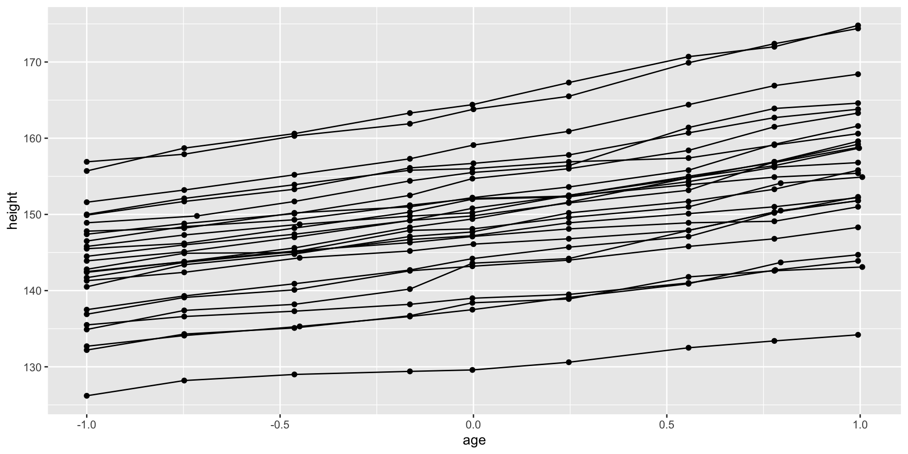
What happens without the correct grouping?
If the group aesthetic is omitted, ggplot2 finds no discrete variable and treats all observations as belonging to a single group. The result is a characteristic sawtooth pattern — lines connecting observations from different subjects in an arbitrary order — which is clearly misleading:
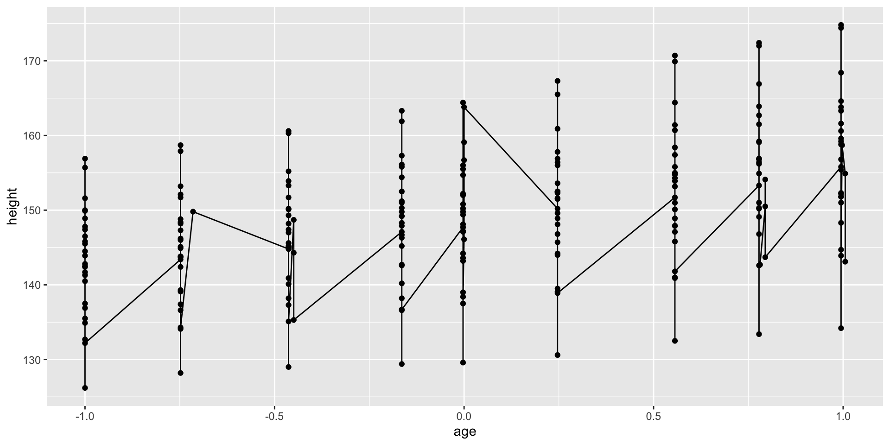
Grouping by multiple variables
When a group is defined by the combination of more than one variable rather than a single column, use interaction() to construct a composite grouping key:
This ensures that observations sharing the same school and the same student identifier are treated as belonging to the same group.
Exercises
Draw a boxplot of
hwyfor each value ofcyl, without convertingcylinto a factor. What additional aesthetic must you set to make this work?Modify the plot below so that a separate boxplot is produced for each integer value of
displ:
Different groups on different layers
Different groups on different layers
There are situations in which different layers of a plot require different levels of aggregation. For example, one layer may display individual trajectories while another overlays a single overall trend line.
If the grouping aesthetic is set globally in ggplot(), it propagates to every layer — including geom_smooth(). The result is one smoothed line per group, which is typically not what we want:
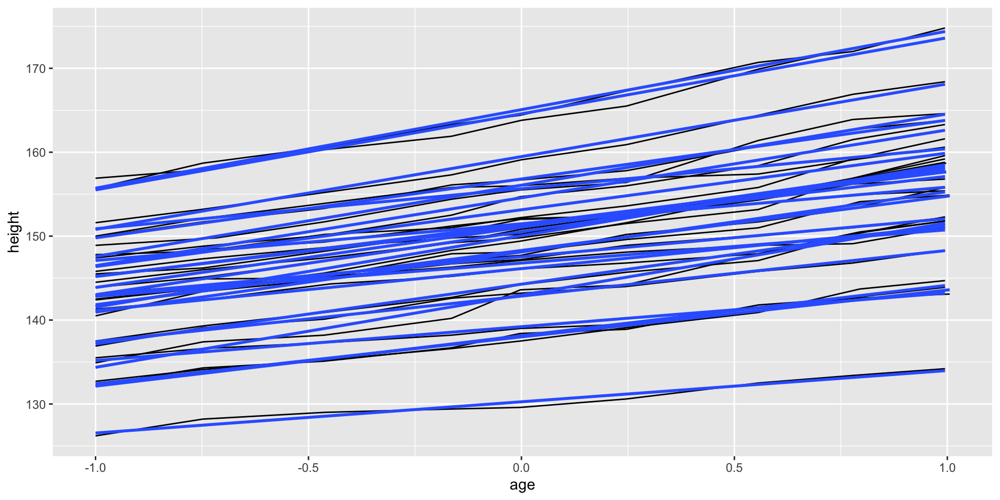
This produces one linear fit per subject, rather than a single trend line summarising all boys together. Remember: grouping controls not only the geometry but also the statistical transformations — each stat runs independently for each group.
Fixing the problem: layer-specific grouping
The solution is to move the group aesthetic from the global ggplot() call into geom_line() alone. The geom_smooth() layer then has no discrete variable to group by, so it defaults to treating all observations as one group and produces a single overall smooth:
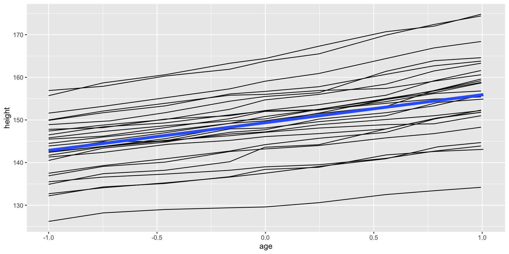
Key takeaway
Aesthetics set inside ggplot() are global and apply to every subsequent layer. Aesthetics set inside an individual geom function are local and apply only to that layer. This distinction is critical when different layers require different grouping structures.
Overriding the default grouping
Overriding the default grouping
Sometimes a plot has a discrete x-axis, yet we still want to draw lines that connect observations across groups rather than within them. This pattern appears in interaction plots, profile plots, and parallel coordinate plots, among others.
Consider boxplots of height at each measurement Occasion. Since Occasion is a discrete variable, ggplot2 automatically draws one boxplot per occasion:
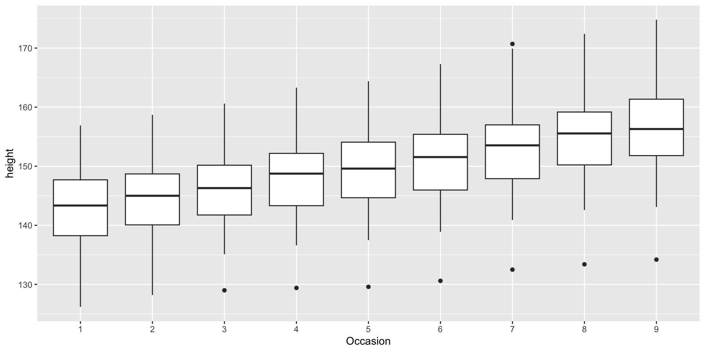
Naïvely adding lines does not work
Simply adding geom_line() to the boxplot produces lines drawn within each occasion (connecting observations at the same x position), not across occasions per subject. This is because the default grouping is driven by Occasion:
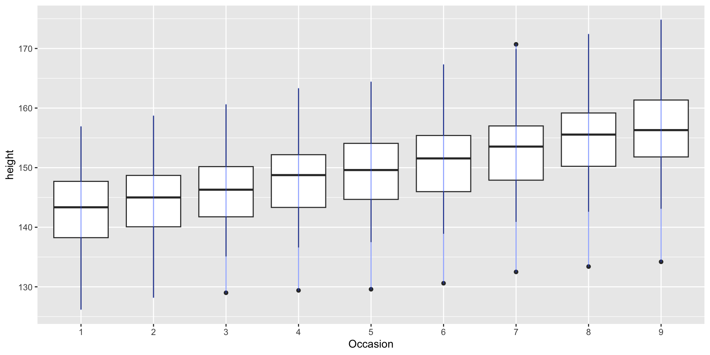
Overriding the grouping in a single layer
The fix is to explicitly override the grouping in geom_line() to specify one line per subject. The boxplot layer retains its default grouping by Occasion, while the line layer uses Subject:
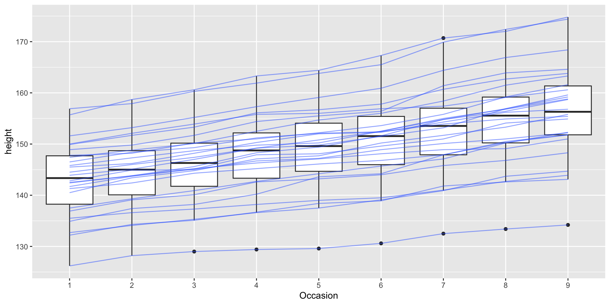
Each blue line now traces an individual boy’s growth across all nine occasions, exactly as intended.
Exercises
- When illustrating the difference between mapping a continuous vs. a discrete colour to a line, the discrete example required
aes(group = 1). Why? What happens when it is omitted? What is the difference betweenaes(group = 1)andaes(group = 2)?
Matching aesthetics to graphic objects
Matching aesthetics to graphic objects
An important question arises with collective geoms: when individual observations carry different aesthetic values, how should those values be mapped onto a single geometric object?
ggplot2 handles this differently depending on the geom type.
Lines and paths: the “first value” rule
For geom_line() and geom_path(), each segment is defined by two consecutive observations. ggplot2 applies the aesthetic value (e.g., colour) from the first of the two observations to each segment. The aesthetic of the final observation is never applied to any segment.
library(patchwork)
df <- data.frame(x = 1:3, y = 1:3, colour = c(1, 3, 5))
p1 <- ggplot(df, aes(x, y, colour = factor(colour))) +
geom_line(aes(group = 1), linewidth = 2) +
geom_point(size = 5)
p2 <- ggplot(df, aes(x, y, colour = colour)) +
geom_line(aes(group = 1), linewidth = 2) +
geom_point(size = 5)
p1 | p2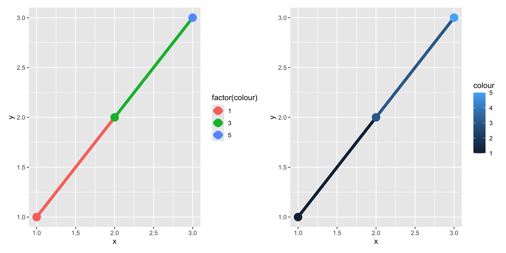
In the left panel (discrete colour), the first point and first segment are red, the second point and second segment are green, and the last point (no segment follows it) is blue.
In the right panel (continuous colour), the same “first value” principle applies to three shades of blue. Crucially, ggplot2 does not smoothly interpolate between aesthetic values — even for a continuous variable. If a smooth colour gradient along the line is desired, the interpolation must be performed manually:
Manual linear interpolation for smooth colour gradients
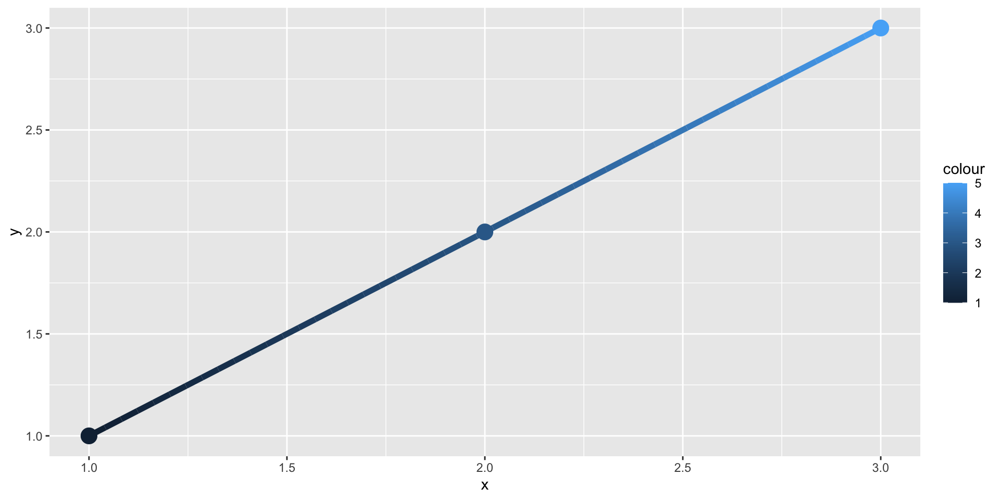
The approx() function linearly interpolates both the y coordinate and the colour value at 50 evenly spaced positions, producing a smooth gradient along the path.
Additional constraint: constant line type
An important limitation applies to paths and lines: the linetype aesthetic must remain constant over the entire line. R has no mechanism for rendering a line whose type (solid, dashed, dotted, etc.) varies continuously along its length.
Polygons and other complex collective geoms
For geoms more complex than lines — such as polygons — a single geometric object may map onto many observations, making it ambiguous how differing aesthetic values should be reconciled. For example, how would a polygon be filled if each of its border vertices specifies a different fill colour?
ggplot2 resolves this ambiguity with a simple rule: aesthetics from the individual observations are used only when they are all identical across the group. If the aesthetic values differ, ggplot2 falls back to its default value instead.
Discrete variables: splitting into sub-groups
For discrete fill or colour variables, ggplot2 incorporates the variable into the group aesthetic automatically. This splits the collective geom into smaller pieces. For bar and area charts, stacking these pieces preserves the shape of the ungrouped data:
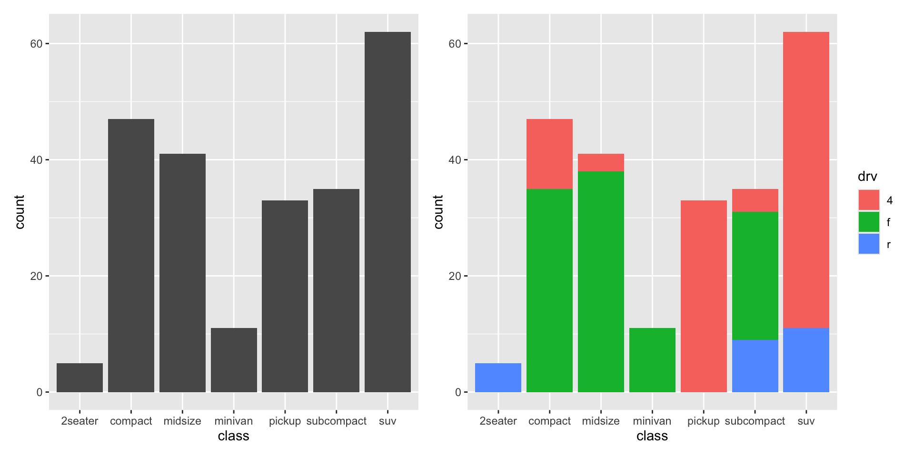
Continuous fill with bars: a common pitfall
Mapping a continuous variable to fill in geom_bar() does not work the same way. Because each bar spans multiple observations with different hwy values, no single colour can summarise them, and ggplot2 reverts to the default grey:
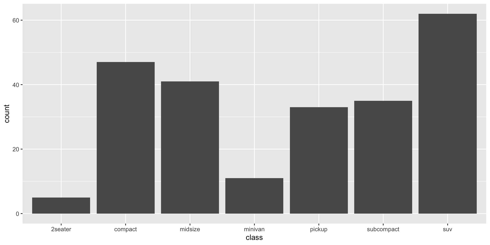
Fixing it: override the grouping
To display multiple fill colours within each bar, we must override the grouping so that each unique hwy value forms its own sub-bar. The stacked result reveals the distribution of highway fuel economy within each vehicle class:
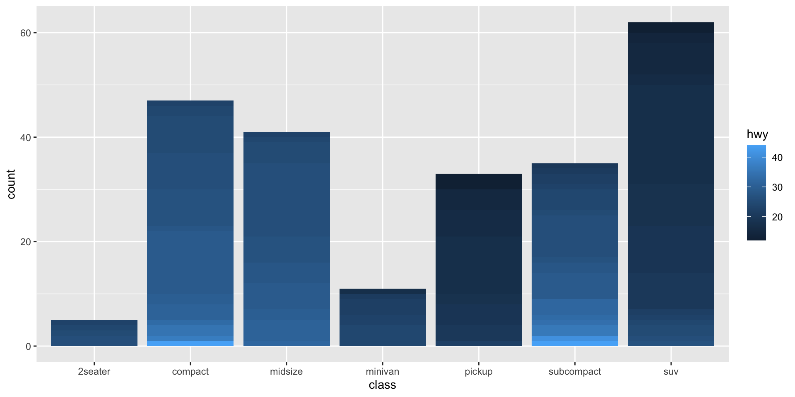
When this technique is used, the bars are stacked in the order defined by the grouping variable (here, hwy). If precise control over the stacking order is needed, convert hwy to a factor with levels arranged accordingly.
Exercises
- How many bars are displayed in each of the following plots? Explain your reasoning.
(Hint: add colour = "white" to outline individual sub-bars.)
- Install the
babynamespackage and run the code below. Identify what is wrong with the resulting graph and fix it. Why does the uncorrected version look unexpected?
Acknowledgement
Copyright notice. These teaching materials have been adapted from ggplot2: Elegant Graphics for Data Analysis (3e). All rights are reserved by the original authors and publishers.
Non-commercial use only. These materials are strictly intended for educational purposes and must not be used for commercial gain or profit.
Proper attribution. Any reproduction, distribution, or use of these materials must provide proper attribution to the original source.

ggplot2: Elegant Graphics for Data Analysis